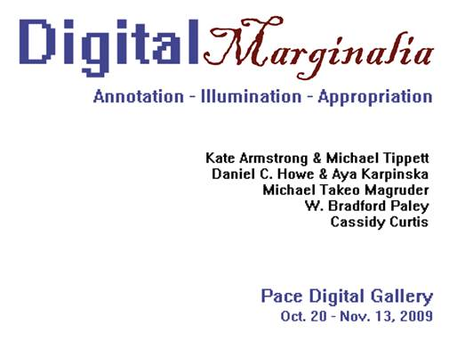
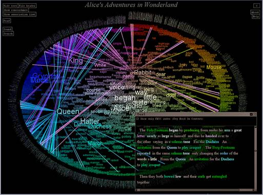
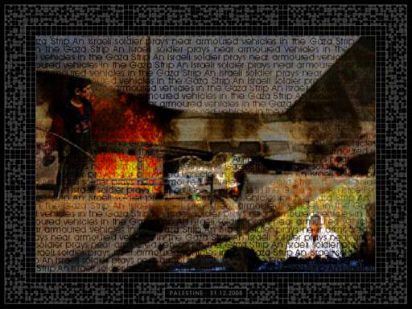
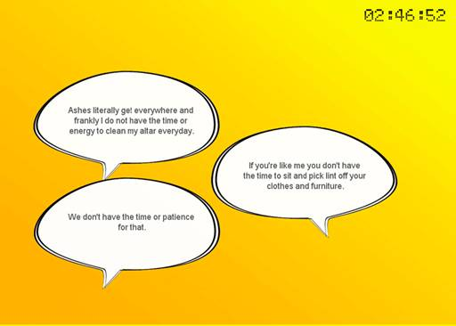
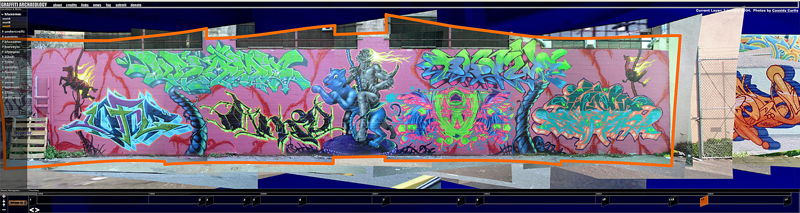

|
|
|||
|
|
|
|
 |
|
Opening: |
|
Who of us has not scrawled a comment, diagram, or
cartoon in the margin of a textbook; or possibly added a comment to an
already existing line of remarks on a public wall? Whether in the multilayered
illustrations of cave walls, the poems added to an ink painting of a Chinese
landscape, or the annotations to a medieval manuscript, people throughout
time have had their say about previously existing words and images. Today,
digital technologies make this process nearly transparent. Document
annotation is now routine. Social media sites such
as Flicker, YouTube, and Twitter, and blogs and wikis all provide
means for anyone to be an author or commentator in an instant. Within this
global communication scrum, artists, scientists, and designers are mining the
texts and images deposited on the Internet to reconstitute them into an
infinite number of new stories or revisualizations of old. |
|
Digital Marginalia gathers together five works that bring forth the richness of writing and imagery explored, reinterpreted, highlighted, and annotated by seven artists. Cassidy Curtis's Graffiti Archaeology originated with a sequence of human gestures on brick and mortar walls, each recording an alteration of a previous work. The viewer moves through a digital dig of time-and-space revealing a layered history of combinations and revisions. W. Bradford Paley’s Textarc mines classic literature found in digital places like Project Gutenberg to reconfigure them into graphical renderings. Textarc's luminous concentric spirals of these texts encourage the reader/viewer to move dynamically through the textural layers to make new associations. Michael Takeo Margruder's Last Days… ventures beyond the analog world of wall art and traditional literature into the digital news photos and reports produced for online consumption. Although the violence between Palestinians and Israelis continues, Last Days… recycles and recomposes a select set of text and imagery from the last five days of 2008, continually focusing and refocusing our attention on this terrible conflict. In contrast, Kate Armstrong and Michael Tippett's Grafik Dynamo continuously trawls through both web images and text to render narrative marginalia comic strip style, employing annotation to create meaning from a random combination of imagery and text bubbles. Finally, No Time Machine by Daniel C. Howe and Aya Karpinska utilizes their invisible search paradigm to reach through the verbosity of the digital universe to retrieve expressions of angst that communicate our collective sense of time compression. Our minds are the annotation machines that make meaning from exchanges that float in speech bubbles amid a glowing yellow space. |
|
Francis T. Marchese, curator, is founder and co-director of the Pace Digital Gallery and works in visual computing. (csis.pace.edu/~marchese) |
|
The Pace Digital Gallery gratefully acknowledges
the support of |
|
Textarc
is an alternative way to
view text. It is an online tool that encourages visualization of word
patterns by generating a visual index or map of the text. It transforms
texts such |
 |
|
||
|
W. Bradford Paley W. Bradford Paley
uses computers to create visual displays with the goal of making readable and
engaging expressions of complex data. He did his first computer graphics in
1973, founded Digital Image Design Incorporated (didi.com/brad) in 1982, and
started doing information visualization in 1986. He has exhibited at the |
|
|||
|
Last Days…. is constructed from one hundred
images collected from online news services during the final five days of 2008
when the Israeli-Palestinian conflict resumed with brutal intensity. The
photographs have been removed from their journalistic context and stripped of
all but their basic captions. The images and texts are then recombined,
together with a persistent sound track, into an unending re-mediation of
events that provides an alternative, contemplative space. (www.takeo.org/nspace/ns029/ ) This work is dedicated to the memory of the 390 Palestinians and 4 Israelis who as a result of this renewed violence did not live to see the New Year. |
 |
|
||
|
Michael Takeo Magruder Michael Takeo
Magruder is an artist and researcher based in
King’s Visualization Lab, King's College London. His work uses emerging
technologies, including high-performance computing, mobile devices, and
virtual environments, blending Information Age technologies with modernist
aesthetics to explore the networked, digital world. His work has been
showcased in over 200 exhibitions in 30 countries, including the Courtauld Institute of Art, EAST International 2005, and |
|
|||
|
No Time Machine deals with time. Quiet time, dead time, free time—call it what you will, there seems to be less and less of it. What do people give up in the race to maximize every second of their waking life? What kinds of activities are replaced by the panicked drive for efficiency? No Time Machine explores these questions by mining the Internet for mentions of the phrase “I don’t have time for” and variations such as “You can’t find the time for” and “We don’t make time for.” Based on a set of computational procedures, a program analyzes the search results and reconstructs them into a poetic conversation. Interwoven with the found poetry generated by this program are sentences that have been re-contextualized by the artists - a human-computer collaboration that expands the field of creative writing to include networked and programmable media. (www.turbulence.org/Works/notime/ ) |
 |
|
||
|
Daniel
C. Howe is a
digital artist and
researcher whose work explores the intersections of literature, computation,
and procedural art practice. In 2009 he received his PhD on generative
literary systems from the Media Research Lab at NYU and was awarded a
'Computing Innovations' fellowship by the National Science Foundation. He
currently resides in Aya Karpinska
is an interaction designer
and artist who has worked in digital media since the late 1990s,
producing installations, performance, literature, and Web, mobile, and game
design. She is particularly interested in how reading, writing, and listening
are transformed by technology. Aya has Masters
degrees in Interactive Telecommunications ( |
|
|||
|
Grafik Dynamo is a net art work that loads images from the Internet into a live action comic strip. The images are accompanied by fragments from an original non-linear narrative that are dynamically embedded within speech and thought bubbles and randomly displayed. Animating the comic strip using dynamic web content opens up the genre in a new way: Together, the images and narrative serve to create a strange, dislocated notion of sense and expectation in the reader, as they are sometimes at odds with each other, sometimes perfectly in sync, and always moving and changing. The narrative is informed by comic books and spy novels, in which people walk around with suitcases filled with gems and scientists become deranged by their magnificent powers. When launched in 2005 this work used a live feed from LiveJournal; today, the media feed is Flicker. (www.turbulence.org/Works/dynamo/ ) |
|
|||
|
Kate Armstrong is an artist, writer, and
independent curator. Her interdisciplinary practice merges networked media,
written forms, and urban experiences to create work that examines process and
accumulation. She has lectured and exhibited internationally, producing
events and participating in exhibitions at venues including ISEA 2006 ( Michael Tippett is an Emmy Nominee and
international expert on emerging news models. In 2005, Tippett
co-founded NowPublic.com, a site for public and participatory journalism,
which was named one of the most useful sites on the web by The Guardian
and Time Magazine. Tippett
is on the |
||||

|
Graffiti
Archaeology is
a project devoted to the study of graffiti-covered walls as they change over time.
It captures the process of constant change, making it visible through an
interactive time lapse collage of photographs of certain walls taken over a
span of months or years. The photos that make up Graffiti Archeology are of |
|
 |
|
Cassidy Curtis received
his B.A. in Mathematics from |